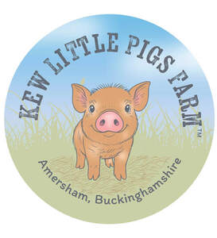
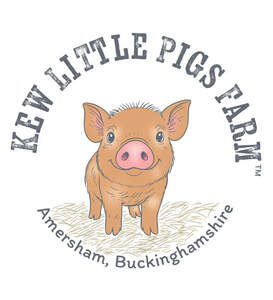
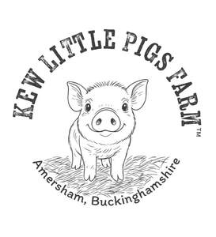

Trade Mark Journal No.2026/011 13 March 2026
UK00004345506 25 February 2026 (16,25,31,39,41,44)
Mark 1

Mark 2

Mark 3

- Class 16
- Advertisement boards of paper or cardboard; Pamphlets; Postcards; Books; Posters; Appliques in the form of decals; Stickers; Car stickers; Party invitations; Birthday cards.
- Class 25
- Clothing; Aprons [clothing]; Parts of clothing, footwear and headgear.
- Class 31
- Pet animals; Live animals; Pigs.
- Class 39
- Transportation of animals; Transportation of pet animals.
- Class 41
- Training; Training and further training consultancy; Providing courses of training; Animal exhibitions; Animal exhibitions and training of animals; Hire of animals for recreational purposes; Organisation of entertainment for birthday parties; Holiday camp services; Hosting of entertainment events; Teaching of pet care; Provision of audio and visual media via communications networks; Information about entertainment and entertainment events provided via online networks and the Internet; Providing video entertainment via a website; Entertainment provided via the internet; Publishing of educational material.
- Class 44
- Care of pet animals; Stud services; Breeding and stud services; Services for the care of pet animals; Pig breeding services; Animal husbandry; Animal breeding.
KEW LITTLE PIGS FARM LTD